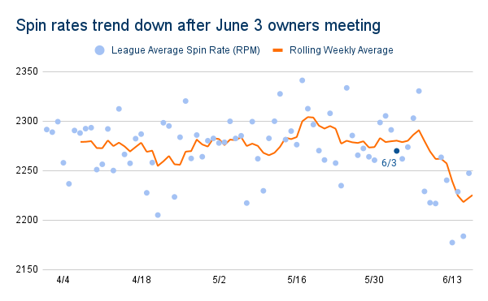

A years-long trend in spin rate has shifted course this month as the league began to make moves on cracking down on “foreign substances” being applied to the ball.
On Tuesday, the commissioner’s office announced that umpires will begin to perform routine checks on pitchers, issuing ejections and suspensions for pitchers found to be using sticky substances to improve their spin rates. It has always been outside the rules to apply foreign substances to the ball, but the league has turned the other way for many years until seeing historically low batting averages this year.
In the Statcast era (since 2015), teams have gravitated towards pitchers achieving higher spin rates, recognizing a correlation between spin rates and strikeouts. League-wide averages have risen each year since the tracking technology became available in 2015, with notably high-achieving pitching staffs often ahead of their peer organizations.
Trevor Bauer, who wrote during his 2020 Cy Young Award-winning season that he has been "chasing spin rate since 2012," was a member of the two teams with the highest spin rate values in the Statcast era, the 2020 Reds and this year's Dodgers. Bauer led all of baseball with a 2,853 average spin rate, and his 2,873 average RPM so far this season would be the highest recorded in the technology's history in a season of 500 or more pitches. In that same piece, Bauer wrote that over eight years of trying, he hasn't "found any other way [to increase spin rate] except using foreign substances."
It's safe to say that at least some pitchers, managers, and front offices in baseball have recognized a pattern - generally speaking, the faster you spin the ball, the easier it is to get hitters out.
As is often the case in baseball when the league starts to see an imbalance in the success of pitchers and batters, the commissioner's office is concerned. Particularly when offense starts to disappear, which is the case this season: the league-wide average of .238 is the lowest since the "Year of the Pitcher" in 1968, after which MLB lowered the mound 10 inches in one of the most literal examples of leveling the playing field on record.
This .238 figure alone doesn't tell us all that much - especially in an era during which batting average has been exposed for its statistical limitations, and when our data is limited to the earlier, colder pre-summer months. But still, between the frighteningly low batting average and the high-profile offensive failures of an astounding six no hitters (plus Madison Bumgarner's unofficial seven-inning no-no) before Memorial Day, the league's concern should come as no surprise.
Entering the 2021 season, with offense falling and Cy Young winners (and others) calling attention to the issue, MLB decided to take a more serious look at the issue of pitchers applying sticky substances to game balls, a well-known, technically-illegal practice that the league has largely swept under the rug through its history. ESPN and The Associated Press reported that in March, the league office notified teams that it would "increase monitoring," including "collecting balls taken out of play from every team and analyzing Statcast spin-rate data."
This week's announcement came amid broad speculation that the league would take action after a reported meeting with the team owners on June 3. Looking at the spin rate trends across the league, it appears that that speculation may have reached the playing field.
After years of increased spin rate, the league average took a hit this month with the weekly rolling average falling below 2,250 rpm for the first time all season. While this may seem like a small change, USA Today baseball columnist Bob Nightengale notes that the month has also seen a jump in the league-wide batting average and decreased strikeout rates, both reversing trends that have been observed for years.
Spin rates across the league have been on an incremental but consistent rise in the Statcast era (since 2015). In that same time, strikeout rate has been exploding, and batting average has fallen to historic lows. But this month, these trends have shifted.
The league-wide decrease begs the question: which teams and players are responsible for the shift? Over about two weeks of data, a number of teams are seeing significant decreases in spin rate, while others are seeing more modest changes.
{{> page_footer }}